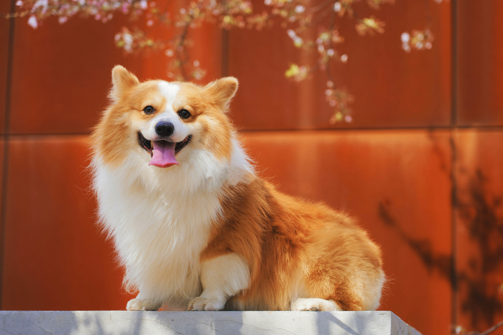

Adopt

Meet Max, aplayfull and lovable Pembroke Wlesh Corgi! He's a 2-year-old.Max loves going on long walks.He's quick learner and already knows basic commands like "sit" and "stay"

Meet Lyra, aplayfull and lovable Siberian Husky! He's a 2.5-year-old.Max loves going on long walks.He's quick learner and already knows basic commands like "sit" and "stay"

Meet Bella, aplayfull and lovable Yorkshire Terrier! He's a 1.5-year-old.Max loves going on long walks.He's quick learner and already knows basic commands like "sit" and "stay"

Meet Ginger, aplayfull and lovable tabby cat! He's a 5-month-old.Max loves going on long walks.He's quick learner and already knows basic commands like "sit" and "stay"